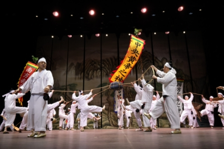
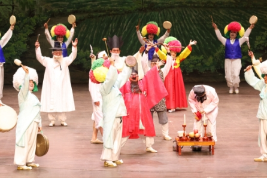
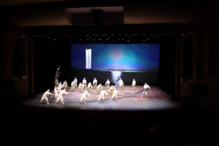

새해맞이 <굿(GOOD)이로구나!> New Year Concert <It is GOOD!>
- 일시
- 1월 7일, 14일, 28일, 매주 토요일 15:00
- 장소
- 연악당
- 관람료
- S석 10,000원 A석 8,000원
- 출연진/연출진
- (사)구덕민속예술보존협회, (사)수영고적민속예술보존협회, (사)부산민속예술보존협회
- 관람연령
- 취학아동이상
부산의 또 다른 세시풍속, 굿(GOOD)이로구나!
부산의 민속예술보존협회에서 전승하는 연희로 구성한 무대. 묵은 것을 털고 새로운 희망을 담아 시민들의 호응으로 만드는 새로운 세시풍속, 신명나는 연희무대와 함께한다.
세부프로그램
1월 7일(토) 동래지신밟기, 동래고무, 동래한량춤 1월 14일(토) 구덕망깨소리, 부산고분도리걸립, 부산농악 1월 28일(토) 수영지신밟기, 좌수영어방놀이, 수영야류, 수영농청놀이


